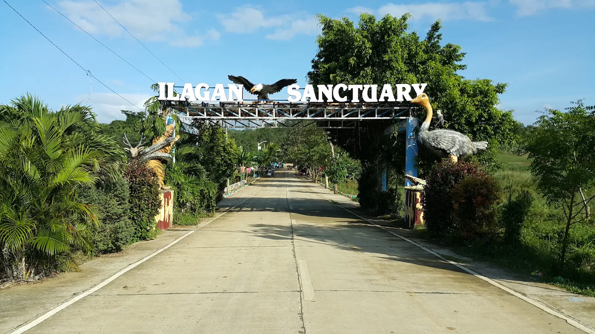
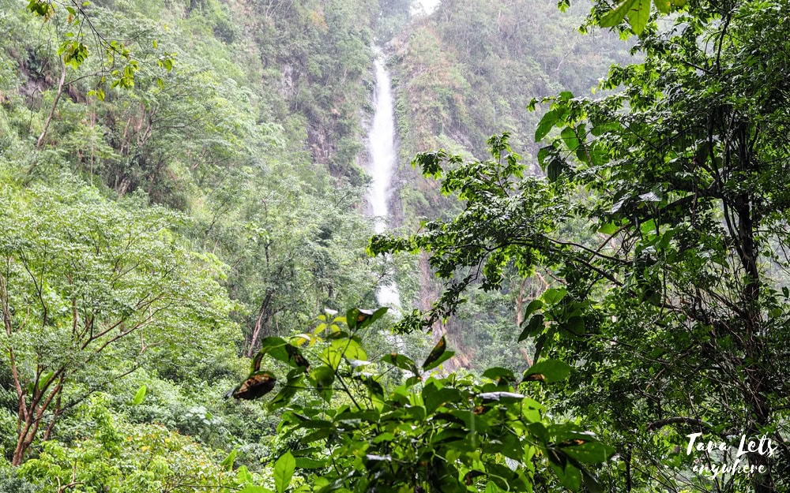
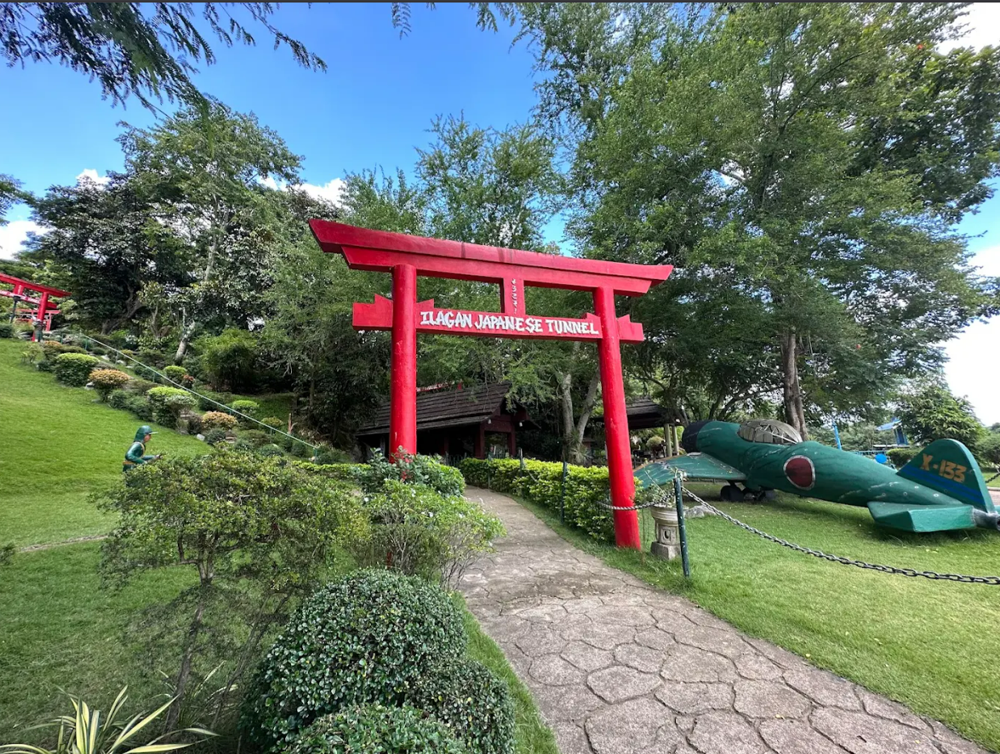

Eco Park
Ilagan Sanctuary & Japanese Tunnel
A premier eco-tourism destination in Santa Victoria Caves featuring zip lines, wildlife, and historical Japanese tunnels.

Discover top destination spots, cultural heritage landmarks, and interactive media guides designed for all travelers.
A premier eco-tourism destination in Santa Victoria Caves featuring zip lines, wildlife, and historical Japanese tunnels.

One of the highest cascading waterfalls in the region surrounded by pristine rainforests and rich biodiversity.

Home to extreme river kayaking, rappelling, and rich aquatic life situated within the Northern Sierra Madre Biosphere.

Preserved World War II subterranean tunnels constructed by Japanese forces located within the Ilagan Eco-Sanctuary complex.